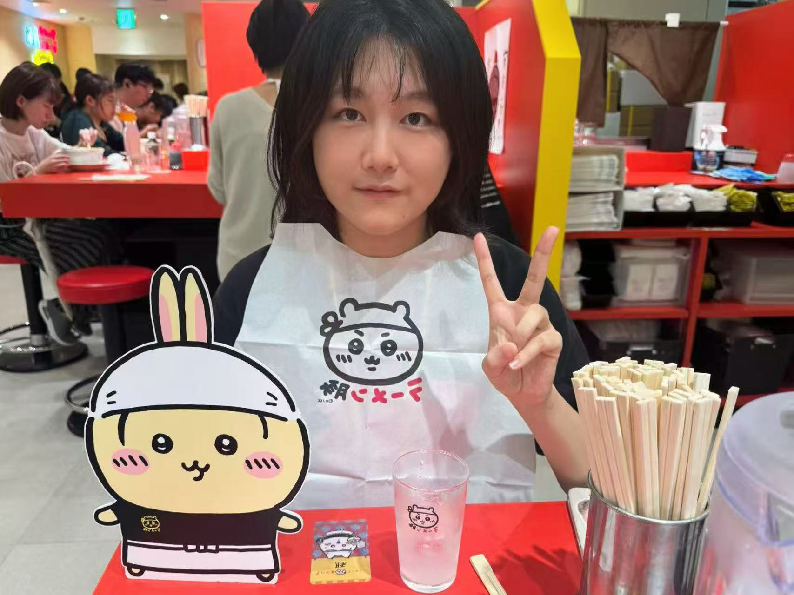

Hi，我是魏心琪，来自上海交通大学安泰经济与管理学院，会计学专业，辅修大数据。我是一个踏实、热忱、有责任心的人。
踏实是我的底色。在专业学习上，我成绩位列专业第一，我始终保持严谨专注的态度完成课内学习，并获得国家奖学金、三好学生等多项荣誉。同时，我积极投身学科竞赛与科研探索：在第九届安泰杯上市公司分析挑战赛中我与团队携手获得优秀表现奖；在大学生英语竞赛中，我获得二等奖；此外，我还参加了校内prp科研项目，利用大语言模型分析上市公司财报，我作为组长带领团队推进研究，推动项目顺利落地，最后取得A的成绩。
热忱则是我驱动自我不断探索、回馈他人的核心动力。在实习实践中，我先后完成四段固收相关工作：第一段实习，我去到了银行金市，深入参与债券投标，了解债券发行与承销 业务流程；之后我去到了国泰君安（国泰海通）FICC部，我快速熟悉多种债券交易业务，比如现券交易、资金正逆回购、组合交易、借贷回售等，协助完成交易指令执行与风险监控，此外我还参与头寸管理以及客户代投。此外，我还去到了东海证券的债券投交部，除了整理一级发行债券之外，我每日还对整体债市从资金面、利率债信用债、一些宏观、行业新闻等方面进行复盘报告撰写，为对固收市场整体认知提升。目前我正在中泰证券的研究所进行利率债的研究中，目前主要负责每日现券成交分机构统计、每周的流动性与机构行为跟踪，具体关注货币资金基本面包括公开市场操作、大行融出、资金价格，以及同业存单与票据，包括发行情况以及利率走势情况等。
除了实习领域，我也在回馈社会方面怀揣着热忱。在过去一年半中，我一直在为两位困境家庭儿童提供无偿英语家教，其中一位初三女生在中考实现超过30分的分数提升；在学生工作中，我也参与我院的新媒体工作部以及青志队，多次组织参加活动，如中福会义卖、安泰战略发展会议，为学院的发展贡献出自己的力量。
除此之外，我的英语不错（托福110，六级639），还自学了日语。平时喜欢游泳、书法、电子琴。如果你想聊聊固收、学业，或者单纯交个朋友，欢迎随时联系我。

← 左右滑动查看更多照片